03 / INTERNSHIP · COMMERCE
Esia
Make the grocery trip predictable.
A grocery delivery experience designed for a local store, with a path to support more stores over time.

THE BRIEF / 60-SECOND OVERVIEW
Make the grocery trip predictable.
The problem
Surveys and one-on-one interviews surfaced confusing delivery fees, out-of-stock products, difficult product discovery and tight schedules. Each introduces a different kind of uncertainty during a routine shopping trip.
The approach
I mapped the journey from search through checkout around a busy shopper’s need to finish efficiently. The mobile and web concepts use the same core shopping flow, so that expanding to more stores can build on a familiar sequence.
01 / DISCOVERY
The uncertainty starts before checkout
Surveys and one-on-one interviews surfaced four recurring concerns: confusing delivery fees, unavailable products, difficulty locating items and busy schedules. Together, they suggested that a convenient shopping experience needs to make the whole purchase predictable.
01
What will delivery cost?
02
Is my item available?
03
Where can I find it?
04
Will it fit my schedule?
02 / SYNTHESIS
Design around the busy shopper
I synthesized the research into a busy-professional persona, focusing on saving time, managing a budget and finding fresh products. This helped connect individual pain points to the circumstances in which someone would use the app.
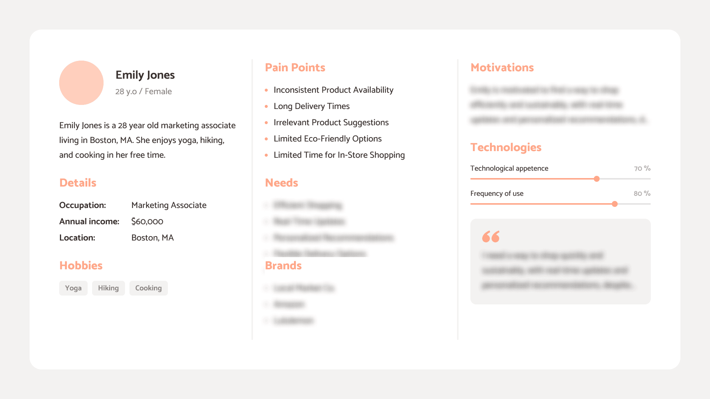
03 / USER FLOW
Connect discovery to a completed purchase
I mapped the path from product search through checkout to see how the steps fit together. The flow provides a basis for checking whether information arrives at the moment shoppers need it, and whether the experience can support a growing store offering.
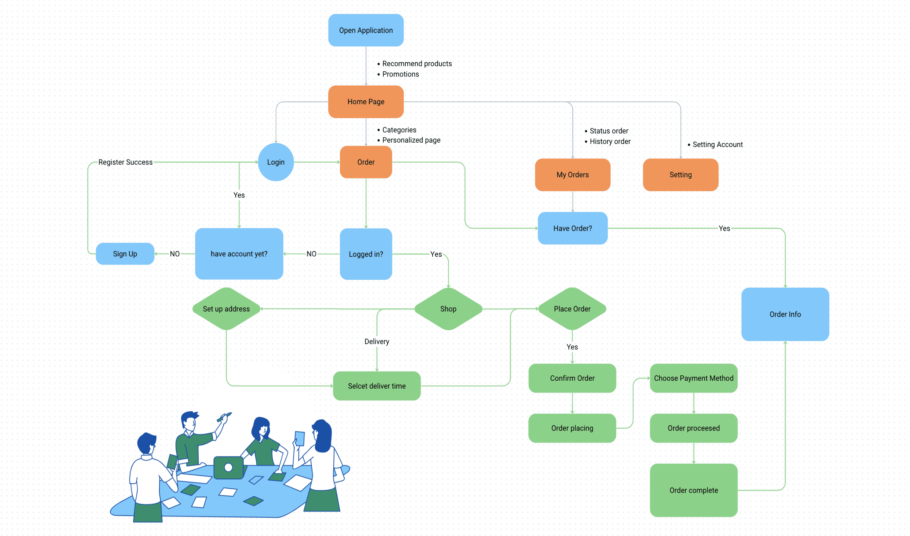
04 / EXPLORATION
Establish the shopping structure
The wireframe exploration established the key mobile screens before the visual design was developed. The sequence below shows the early screen structure. The design challenge was to support shopping efficiently while leaving room for promotions and future expansion.
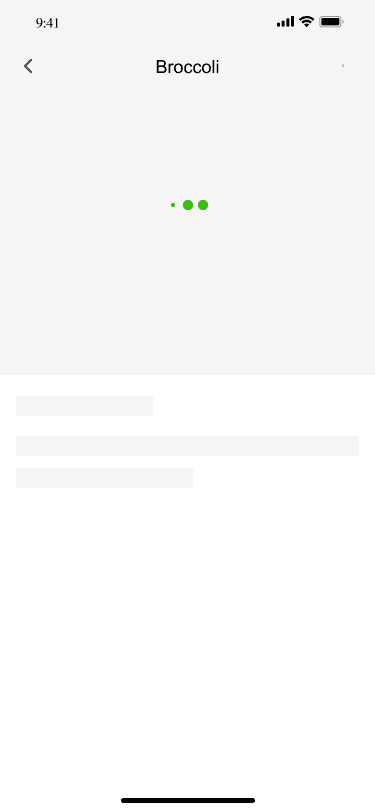
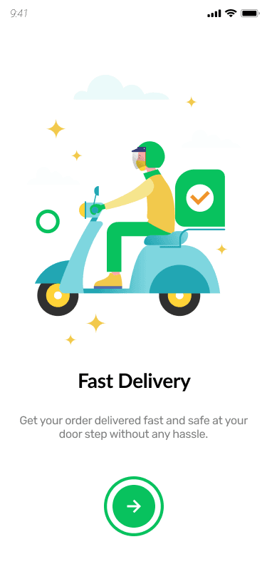
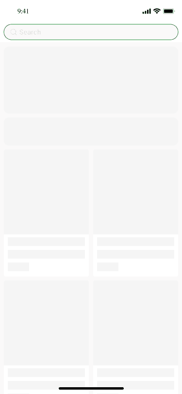
05 / MOBILE SOLUTION
A familiar journey on a small screen
The mobile designs carry the shopping journey into the final interface. Product information, navigation and purchase actions share a consistent visual language. The design work also considers how the service could expand beyond a single local store.
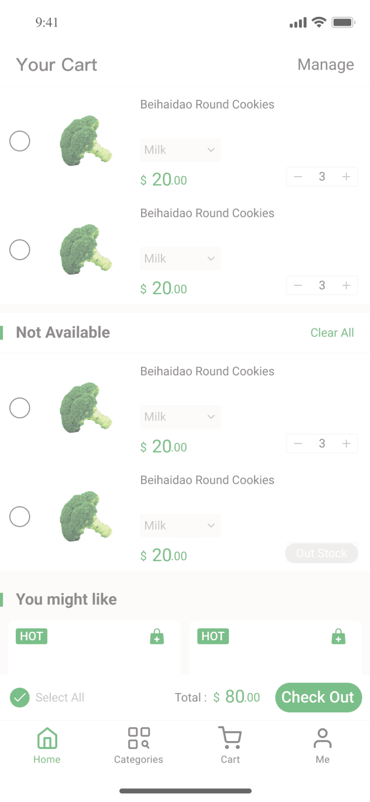
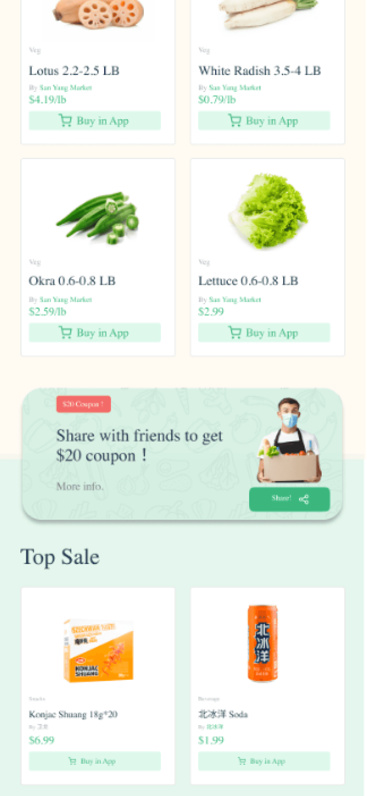
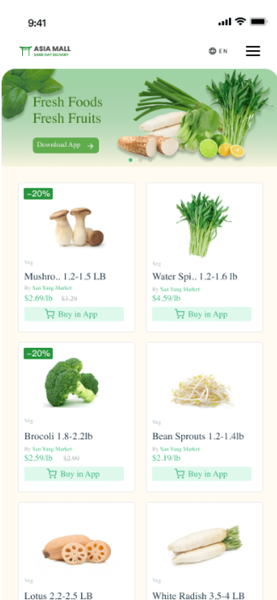
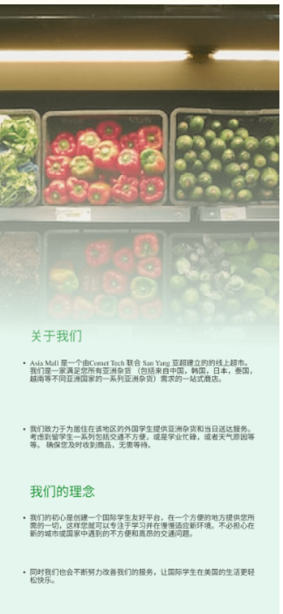
06 / WEB SOLUTION
Extend the same journey to desktop
The web designs adapt the shopping experience to a wider viewport. Reviewing the two formats together makes it possible to inspect how the navigation, content hierarchy and shopping sequence translate across devices.
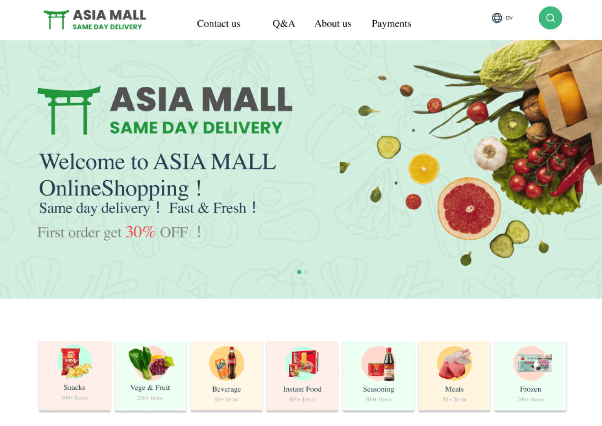
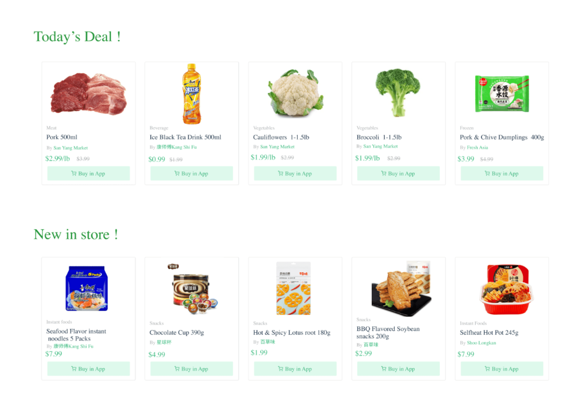
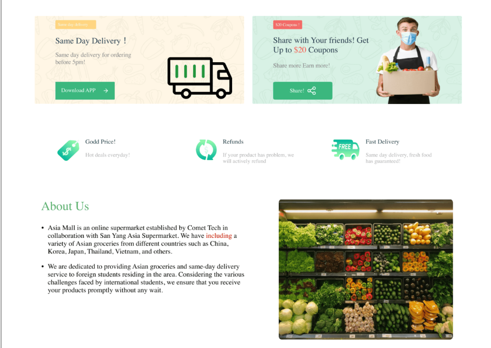
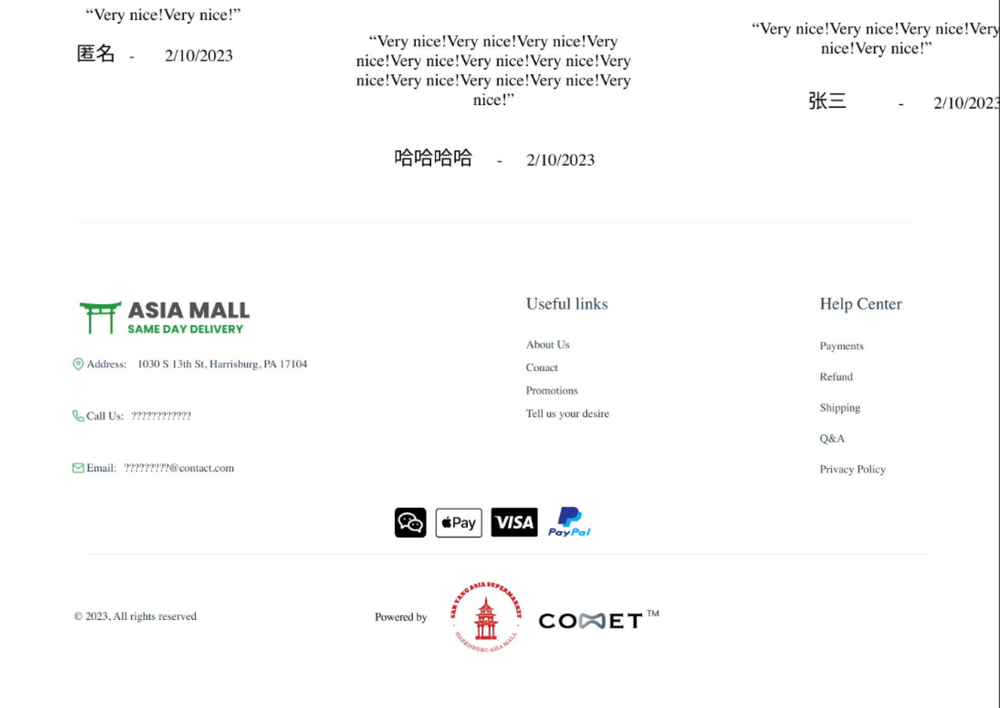
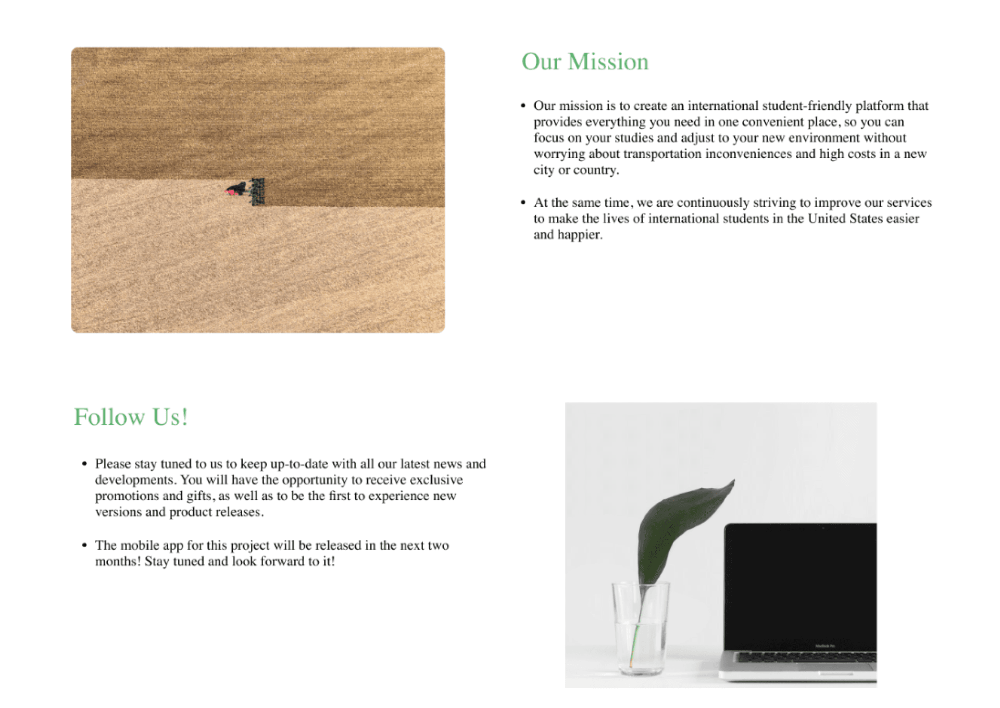
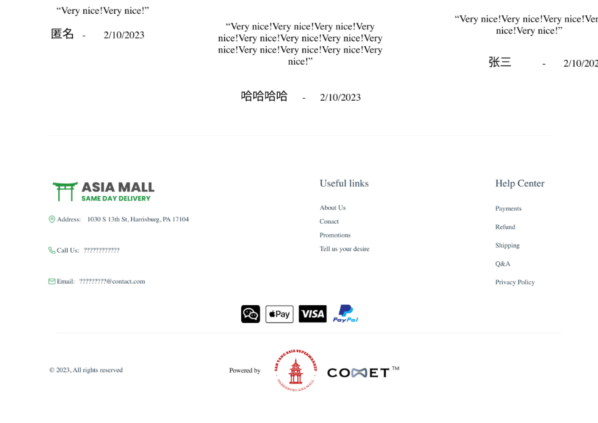
07 / REFLECTION
Keep business goals connected to shopper confidence
The project strengthened my approach to prioritization, clear communication and iterative prototyping. Promotions and engagement need to work within a smooth shopping flow. A useful next test would include unavailable items and a strict budget, revealing whether shoppers understand fees and can recover when their original choice is unavailable.